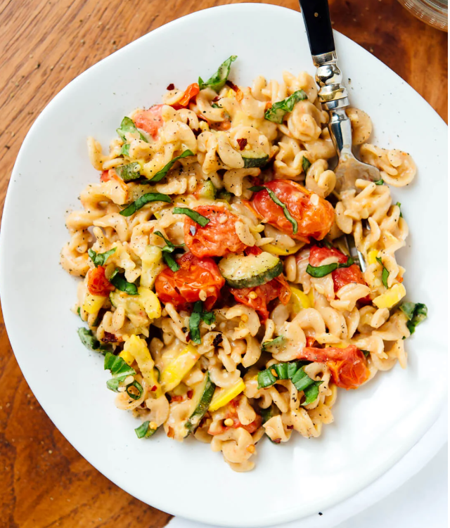

Pasta Recipe

Description
Simple summer pasta recipe featuring roasted cherry tomatoes, zucchini and yellow squash with rotini and a light goat cheese sauce. Healthy and delicious!
- ½ pound whole grain rotini or fusilli or penne pasta
- 1 pint (2 cups) cherry tomatoes
- 2 medium yellow squash, quartered vertically and then sliced into ¼-inch wide wedges
- 1 medium zucchini, quartered vertically and then sliced into ¼-inch wide wedges
- 2 tablespoons olive oil
- Salt and freshly ground black pepper, to taste
- 2 tablespoons lemon juice
- 2 tablespoons butter or olive oil
- 1 ounce goat cheese, crumbled
- 1 small clove garlic, pressed or minced
- Pinch red pepper flakes
- 1 to 2 tablespoons chopped fresh basil
Steps
- Preheat oven to 400 degrees Fahrenheit and line a large, rimmed baking sheet with parchment paper for easy cleanup. On the baking sheet, toss the whole cherry tomatoes and sliced zucchini and squash with 2 tablespoons olive oil. Sprinkle with salt and pepper and arrange in a single layer (or as close to a single layer as possible). Roast for about 25 minutes, tossing halfway, until the cherry tomatoes have burst and the squash is tender.
- Meanwhile, bring a pot of salted water to boil and cook the pasta until al dente, according to package directions. Before draining the pasta, reserve about 1 cup of the pasta cooking water. Drain the pasta and return it to the pot.
- While the pasta is hot, add the lemon juice, butter, goat cheese, garlic and red pepper flakes to the pot. Add about ¼ cup of the reserved pasta cooking water and gently toss the pasta until the ingredients are evenly mixed together and the pasta is coated in a light sauce (add more reserved cooking water if the pasta seems dry).
- Once the tomatoes and squash are out of the oven, add them to the pot along with all of the tomato juices. Gently toss once again to combine. Season to taste with salt (I added more than ½ teaspoon) and freshly ground pepper, then sprinkle chopped basil over the pasta and divide into individual serving bowls. Serve immediately.
Home